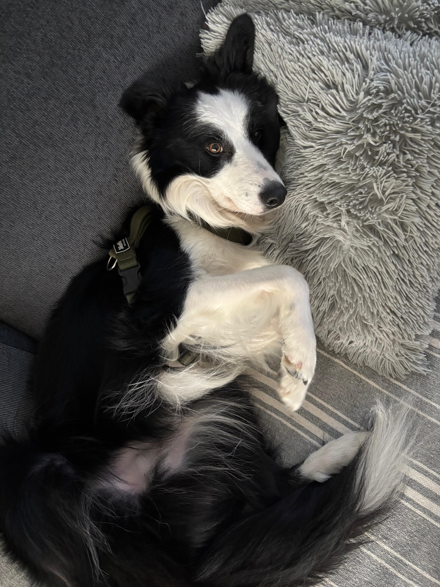

Flash
Flash es un border collie de 3 años. De cachorro tuvo moquillo, una enfermedad donde la tasa de supervivencia no suele ser alta, pero por suerte pudo salir adelante.
- Raza: Border Collie.
- Edad: 3 años.
- Actividad favorita: Pasear, es obligatorio sacarlo todas las mañanas.
- Salud: Tiene problemas neurológicos leves y ansiedad por secuelas del moquillo.
- Fun fact: Odia las motos.


Carácter y rutina
Es hiperactivo y tiene un problema neurológico que le provoca ansiedad e hipersensibilidad en algunos nervios debido al moquillo que superó de bebé, por lo que a veces es bastante histérico. Además es súper glotón: siempre está atento a la comida y se pone bastante pesado pidiendo algo en la cena.
← Volver al inicio